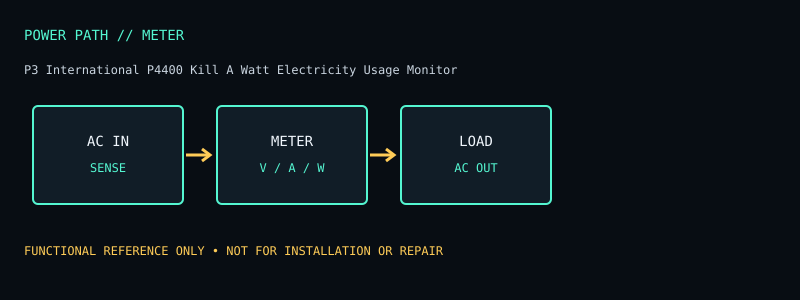

[ METERED POWER MONITORS // MODEL RECORD ]
P3 International P4400 Kill A Watt Electricity Usage Monitor
Plug-in AC measurement instrument for monitoring a connected appliance at a 120 V receptacle. The specifications below are for this named model and region only; verify the complete product label and matching manual before deployment or service.

ARCHIVAL IDENTIFICATION: Preserve the complete SKU, suffix, region, date code, revision, installed battery part (if present), firmware and physical condition. Similar model names do not establish hardware equivalence.
Specifications, conditions & service
| Catalog subcategory | Metered power monitors |
|---|---|
| Topology / power path | Inline power meter; passes mains through to load while measuring electrical quantities; not surge protection or backup. |
| Ratings / output configuration | 120 V AC, 15 A maximum (1875 VA at nominal voltage) per P4400 documentation. Use only within specified load and connector ratings. Single NEMA 5-15R outlet plus NEMA 5-15P input plug on North American unit. |
| Battery / replaceability | No battery-backed output. The cited manufacturer product page does not establish a user-replaceable internal battery; do not assume the unit can retain readings when unplugged. |
| Runtime / limits and conditions | No runtime feature. It does not maintain power to the appliance during an outage; do not rely on retained readings after unplugging unless the exact manual confirms it. |
| Interfaces / monitoring | LCD indicates voltage, current, watts, VA, frequency, power factor and accumulated kWh on the documented model. No network interface or remote telemetry. |
| Safety / installation caveats | Not a surge suppressor or isolation transformer. Do not exceed 15 A; unsuitable for hardwired loads or plug shapes requiring adapters. Measuring readings are not revenue-grade billing data. |
| Model variants / revision checks | P4400 is North American plug-in meter; newer P4460/P4480 versions have different logging/features. Confirm exact model and manual, especially whether stored data is retained after unplugging. |
Field service / archive notes
- Record labels and connector layout before installation; document load, input conditions, measured behavior and test date separately from manufacturer-rated values.
- Never open energized mains equipment. Battery devices can retain dangerous voltage or high fault current; follow the manufacturer’s replacement and recycling procedure.
- Inspect enclosure, cord, plugs, grounding, indicators, alarms and battery condition. Quarantine damaged, swollen, leaking or heat-affected equipment.
- Network-management appliances should be isolated, updated where supported and configured with non-default credentials; do not expose legacy management interfaces directly to the public internet.
Manufacturer references
- Manufacturer product listing — P3 International P4400 Kill A Watt Electricity Usage MonitorModel identity and product-family specification reference. Confirm exact regional SKU against the chassis label.
- Manufacturer manual / support documentationConsult the version matching the exact SKU. Runtime references are load- and condition-dependent estimates where supplied, never a guarantee for a particular aged unit.